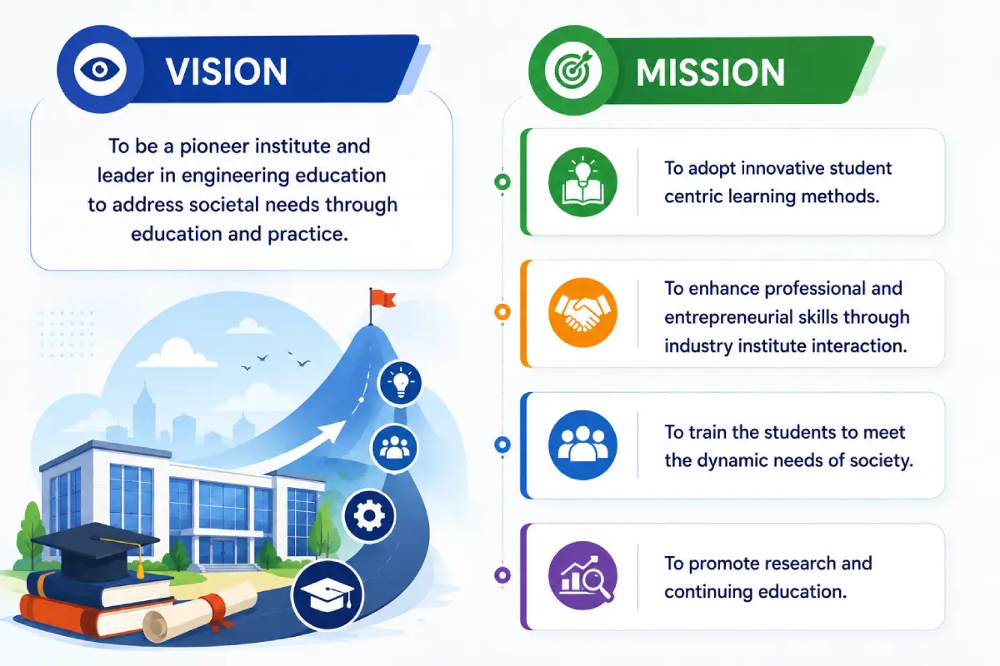

Welcome to our website!
Vardhaman College of Engineering (VCE), established in 1999, is promoted by the Vardhaman Educational Society, a not-for-profit organization committed to advancing quality education. The Society was founded with a vision to establish and manage institutions that impart education across diverse disciplines, including engineering, technology, sciences, management, and vocational training, while fostering creativity, innovation, and entrepreneurial skills among students. The Society operates on a non-profit and non-commercial basis, focusing on societal development and knowledge dissemination.
